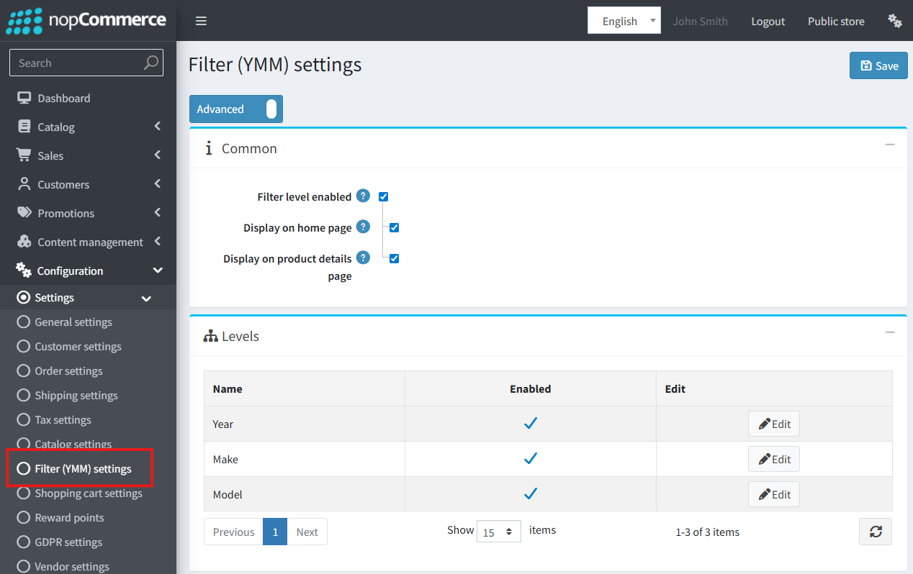
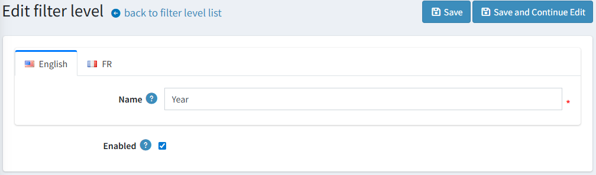
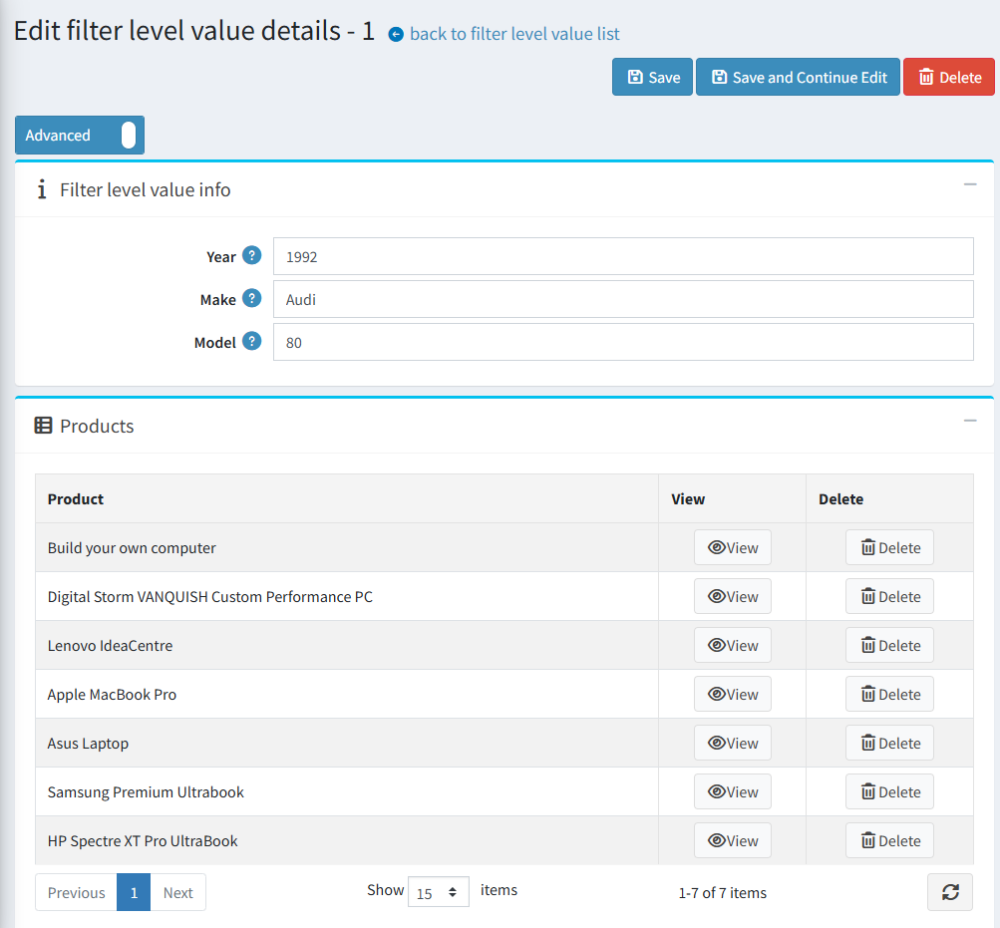
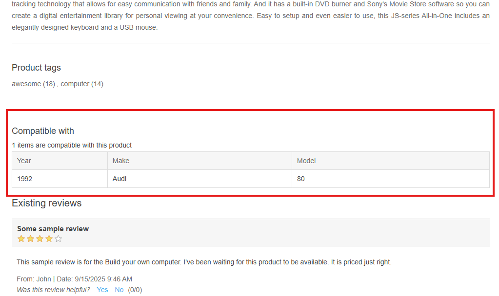

YMM (Year-Make-Model) Filter
Overview
The YMM (Year-Make-Model) filter allows customers to find products using a structured, multi-level filtering system. While its name suggests automotive use, the feature is fully customizable and can be adapted for any product catalog requiring compatibility checks, such as electronics parts (e.g., filtering by "Make, Model, Display Size").
The core purpose is to help customers easily find parts compatible with a specific vehicle or product, enhancing the user experience and reducing the likelihood of incorrect purchases.
Key Features
- Configurable Multi-Level Filtering: Administrators can define up to three nested filter levels (e.g., Year → Make → Model).
- Flexible Value Management: Easily add, edit, and bulk-manage filter values (e.g., 2023, Audi, A4) via the admin panel or Excel import/export.
- Product-to-Filter Mapping: Assign products to one or more compatible filter combinations to ensure accurate search results.
- Seamless Storefront Integration: Display the filter on the homepage for easy access and show detailed compatibility information on product pages.
Admin Panel Configuration
Filter Settings
To configure the feature, navigate to Configuration → Settings → Filter (YMM) settings.

Enabled: This is the master switch to activate or deactivate the entire YMM functionality on the website. It is disabled by default.Display on home page: Check this box to show the YMM filter block on the site's homepage.Display filter values on product details page: When checked, a "Compatible with" table will appear on product pages listing all associated filter combinations. This is enabled by default.
Filter Levels Grid
Here you can customize the three available filter levels:

- Enabled: Activate or deactivate each level.
- Name: Set a custom, localizable name for each level.
Note
By default, a new installation will have "Year," "Make," and "Model" configured and enabled.
Warning
A parent level cannot be disabled if a child level is currently enabled.
Managing Filter Values
To create and manage the options for each filter level, go to Catalog → Filter level values (YMM).

Value Creation & Editing: Administrators can add or edit combinations of values for the enabled filter levels (e.g., Year: 2024, Make: BMW, Model: X5). The system prevents the creation of duplicate combinations.

Product Mapping: When creating or editing a value set, a new window appears where you can directly map products to that specific combination. This window also displays products that are already mapped.
Management Features:
- Filter: The admin grid can be filtered by each active level to quickly find entries.
- Import/Export: Bulk manage filter values using the Excel import and export utility.
- Delete Selected: Remove multiple value combinations at once.
Mapping from the Product Edit Page
You can also manage mappings directly from a product's configuration page.
Navigate to Catalog → Products and open a product for editing.
Find the new "Filter level values (YMM)" panel (located after the "Cross-sells" panel).

From here, you can add or remove associations between the product and existing filter value combinations.
Public Store Functionality
Homepage Filter
If the feature is enabled to display on the homepage, customers will see a filter block with dropdown menus for each active filter level.

The dropdowns are dependent and sequential. A value must be selected in the first-level filter (e.g., "Year") before the second-level dropdown ("Make") becomes active, and so on.
Search Results Page
A search is executed only after the customer has selected a value for all enabled filter levels. Upon clicking Search, the user is redirected to a dedicated YMM search results page.

This page displays the selected filter criteria at the top and a paginated list of all matching products below.
Product Details Page
If the corresponding setting is active, a table titled "Compatible with" will be displayed on the product page. This table clearly lists all the YMM combinations that the specific product is compatible with, giving customers confidence in their purchase.
